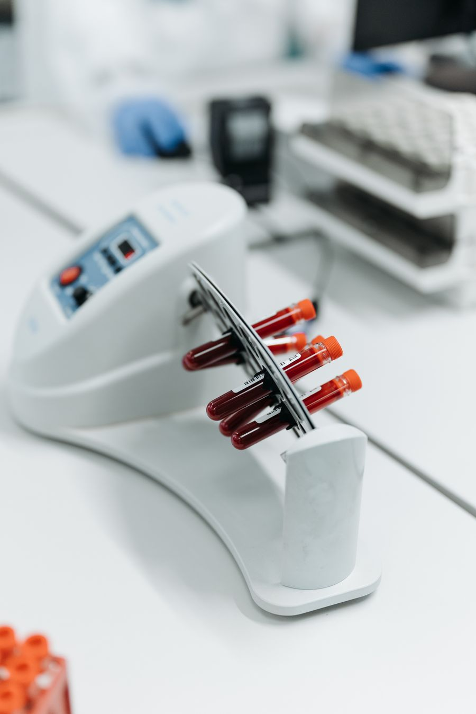
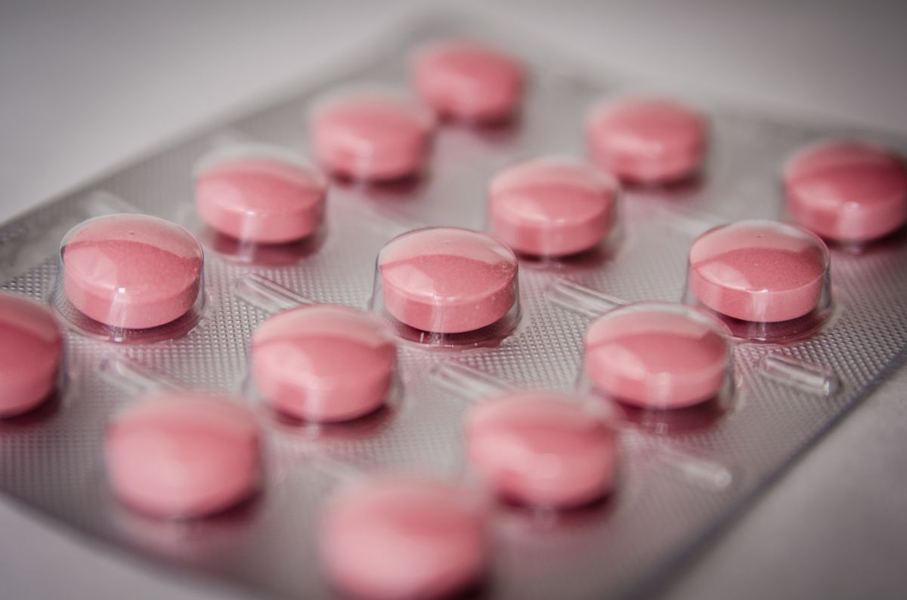

- Home
- About
Twenty-one years on the same road
Vel Hospital has never moved. The building on Dindigul Main Road has been extended seven times, but the address on the first prescription pad printed in 2004 is still the address today.

Thirty-two of them intensive care, twelve neonatal, fourteen dialysis stations.
It began with two doctors and a borrowed ambulance
In 2004 Palani had no shortage of clinics and not one hospital that could take a road accident. Anything serious went to Dindigul — sixty kilometres, and the better part of two hours on the old road. Two physicians who had trained together in Madras took a thirty-bed building on Dindigul Main Road, put in one operating table, and borrowed an ambulance from a friend's transport company for the first eight months.
The name was not a branding exercise. In a town that grew up around the hill and the vel, it was the obvious thing to call it, and the sign painter did it in one afternoon for two hundred rupees.
The first expansion came in 2008 and paid for the second. That has been the pattern ever since — no outside investors, no chain acquisition, each department funded by the one before it. It made growth slower than it might have been. It also means nobody here has ever been asked to hit a revenue target on a patient.
Nineteen of the original staff are still on the rolls, including two of the nurses who joined in the first year. That continuity is the whole argument for a hospital like this one.
One department at a time
Thirty beds and one theatre
Opened as Vel Nursing Home with general medicine, general surgery and a small labour room. Staff of fourteen.
First expansion — 80 beds
Second floor added. Paediatrics, orthopaedics and a proper laboratory. The name changed to Vel Hospital.
Intensive care and 24×7 emergency
Eight-bed ICU and a round-the-clock emergency room — the first on this stretch of Dindigul Main Road.
NABL accreditation for the laboratory
Digital X-ray, ultrasound and a CT scanner installed the same year.
Cardiology and the cath lab
Single-plane catheterisation laboratory and a twelve-bed coronary care unit. Primary angioplasty available from day one.
NABH accreditation
Full hospital accreditation from the National Accreditation Board for Hospitals and Healthcare Providers.
Neuro block and 1.5T MRI
Neurology, neurosurgery and a dedicated stroke unit. Nephrology and the dialysis floor followed in the same year.
220 beds, 18 departments
Fifth floor completed. Modular theatre complex rebuilt with laminar airflow across all four theatres.
Three rules we do not bend
Every hospital has a mission statement. These are the three that actually get enforced.
Tell the family the truth
Including when the news is bad, and including when we have made a mistake. Every significant change in a patient's condition is communicated to the listed attendant within the hour, in the language they speak.
No test without a reason
Investigations are ordered because a clinical question needs answering, never to fill a package or meet a target. If you want to know why a test was ordered, ask — the consultant is required to explain it.
Nobody is turned away at the door
An emergency is stabilised first and billed afterwards. Payment capacity is never checked before treatment begins in the emergency department. This has cost us money and we have kept the rule anyway.
Around the hospital
Five floors, a basement car park and a separate emergency entrance on the north side.





Audited, not self-declared
Accreditation is not a plaque — it is a three-yearly inspection where somebody counts your infection rates, reads your consent forms and interviews your nurses without a manager in the room. These are the certifications Vel Hospital currently holds.
- NABH — National Accreditation Board for Hospitals and Healthcare Providers, full hospital accreditation since 2019
- NABL — laboratory accredited to ISO 15189 since 2014
- Registered under the Tamil Nadu Clinical Establishments Act
- Biomedical waste authorisation from the Tamil Nadu Pollution Control Board
- AERB licence for all radiology equipment
- Registered under the Chief Minister's Comprehensive Health Insurance Scheme
- PCPNDT registered — sex determination is not performed, in any circumstance
Certificates are displayed in the reception area and copies are available on request at the medical records counter.
Working here
We hire slowly and we keep people. Average tenure of the nursing staff is just over six years, which is unusual in this sector and is the single number we are proudest of.
| Role | Department | Requirement | Openings |
|---|---|---|---|
| Staff Nurse | ICU & Critical Care | B.Sc Nursing or GNM, TNNMC registered, 2+ years in critical care | 6 |
| Staff Nurse | Labour Room & NICU | B.Sc Nursing or GNM, TNNMC registered, freshers considered | 4 |
| Duty Medical Officer | Emergency | MBBS with TNMC registration, ACLS preferred, rotating shifts | 3 |
| Consultant | Urology | MS (General Surgery) with MCh (Urology), 3+ years post-MCh | 1 |
| Radiographer | Imaging | B.Sc / Diploma in Radiography, CT and MRI experience | 2 |
| Physiotherapist | Rehabilitation | BPT or MPT, post-surgical and neuro rehab experience | 2 |
| Lab Technician | Laboratory | DMLT or B.Sc MLT, biochemistry and haematology bench | 2 |
| Front Office Executive | Administration | Any degree, fluent Tamil and English, hospital experience preferred | 2 |
How to apply
Email your CV to careers@velhospital.in with the role in the subject line, or drop a printed copy at the administration office on the fourth floor between 10 AM and 4 PM on weekdays. Shortlisted candidates are called within ten working days. For clinical roles, bring your registration certificate to the interview.

Second Sunday, every month
A team of four — a physician, a nurse, a lab technician and a pharmacist — runs a free screening camp in a village within thirty kilometres of Palani on the second Sunday of each month. Blood pressure, blood sugar, haemoglobin, a basic examination and a fortnight of medicines where they are needed.
It is not charity in any grand sense; it is early detection, which is cheaper for everyone than an emergency admission three years later. Around 4,800 people were seen this way in the last twelve months.
- Free blood pressure, sugar and haemoglobin screening
- Referral to the hospital at concessional rates where follow-up is needed
- School dental and vision camps twice a year
- Blood donation drives with the Dindigul district blood centre
To request a camp in your area, write to info@velhospital.in with the panchayat name and an approximate headcount.
Visit before you need to
Anyone planning a procedure is welcome to walk the ward, see the room categories and meet the consultant beforehand. Ask at reception — no appointment needed for a look around.